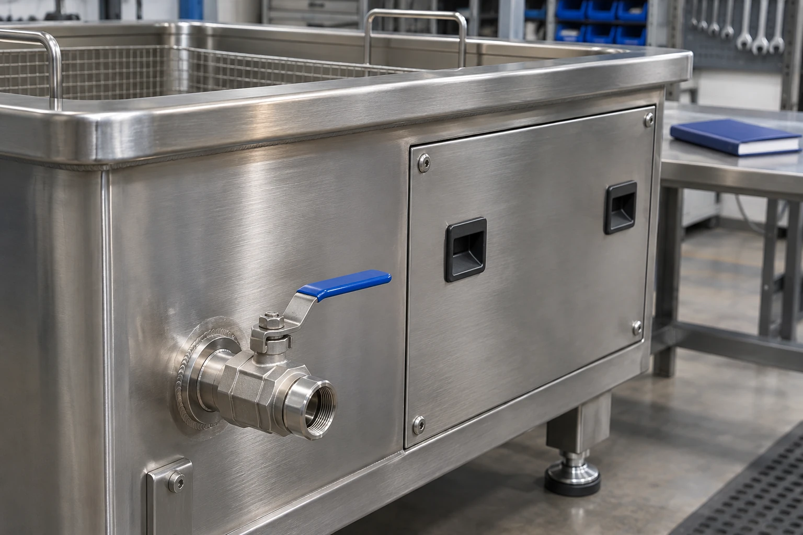

A maintenance log is useful when it explains what changed. A list of checked boxes is less informative if it omits the equipment reference, operating context or action taken after an unusual observation.
1. Identify the equipment and its instructions
Record the model, serial or project reference and the revision of the operating documentation available on site. Identify the associated pumps, filters, lifting equipment and other accessories. Their inspection and service requirements may be documented separately.
Assign responsibility for keeping the log and for reviewing unusual observations. A log does not authorize an operator to open electrical systems or perform service work outside the applicable instructions. Plan maintenance and isolation activities through the responsible qualified personnel.
2. Record useful operating observations
Note the part family, usual loading arrangement and the process being run when a change is observed. Describe the symptom plainly: a visible leak, an unusual noise, a damaged basket or an unexpected change in the finished part condition. Avoid recording a guessed cause as though it has been confirmed.
Keep the equipment status clear. If operation has been stopped for review, record that fact and the person responsible for deciding the next step. Use photographs of external conditions where appropriate, while keeping sensitive production information out of material sent for support.
3. Track bath and accessory care
Follow the equipment and chemical instructions for bath preparation, change intervals and disposal. Record a bath change together with the reason and the relevant operating context. Adding liquid or changing a preparation can affect the conditions being compared across runs.
BANDELIN notes that tanks and accessories have different care considerations, and that auxiliary equipment may have its own maintenance instructions. Use that distinction as a reminder to include baskets, drains and fitted accessories in the record for the actual system.
4. Keep a compact, consistent record
Keep completed service reports with the equipment record. This makes it easier to see whether an issue is new, recurring or associated with a recent change in parts, loading or operating conditions.
| Log field | Useful detail |
|---|---|
| Equipment reference | Machine and relevant accessory identification |
| Operating context | Part family, load and process stage |
| Observation | What was seen or heard, without an assumed diagnosis |
| Care activity | Instruction reference, action and responsible person |
| Status | Operating, stopped for review or released after service |
| Follow-up | Support reference, next check and outstanding action |
5. Prepare a clear support request
Provide the equipment reference, a concise symptom description and the relevant log entries. Explain when the observation began and whether any operating condition changed. Include the applicable error message exactly as shown, rather than rewriting it from memory.
A useful maintenance history supports a more focused technical conversation. It also helps the production team distinguish routine care from an issue requiring service. Use the log alongside the machine-specific documentation and the support arrangements agreed for the equipment.
Sources & further reading
Original practical guidance. External references explain general principles; they do not define a SonicShine model or guarantee results for your parts. Model values on this site are separately attributed to the supplied catalogue.